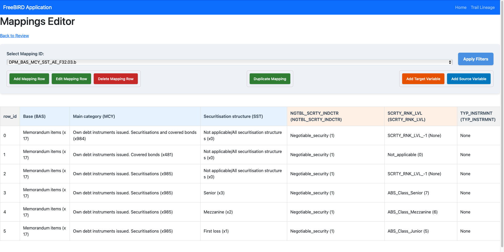
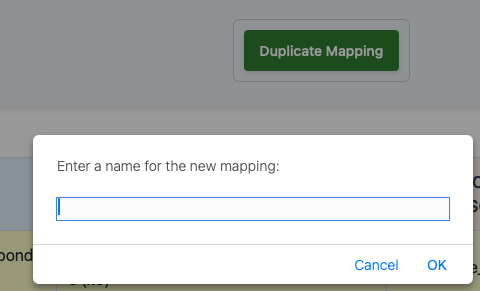

Mapping Editor User Guide
Overview
The Mapping Editor is a powerful tool within the FreeBIRD Application that allows users to create, manage, and modify data mappings between source and target variables. This interface facilitates the transformation and alignment of data from various source systems to target regulatory reporting structures.

Interface Components
Header Section
Navigation Bar
- FreeBIRD Application: Application title in the top-left corner
- Home: Quick navigation back to the main dashboard
- Trail Lineage: Access to data lineage tracking functionality
- Back to Review: Return to the previous review screen
Main Control Panel

Mapping Selection
- Select Mapping ID: Dropdown menu to choose from existing mappings
- Displays current mapping ID (e.g.,
DPMBASMCYSSTAE_F32.03.b) - Click dropdown arrow to view all available mappings
Filter Controls
- Apply Filters: Blue button in the top-right to apply filtering criteria to the mapping data grid
Action Buttons
Row Management
- Add Mapping Row (Green): Creates a new mapping row entry
- Edit Mapping Row (Green): Modifies an existing selected row
- Delete Mapping Row (Red): Removes selected mapping rows from the system
Mapping Operations
- Duplicate Mapping (Green): Creates a copy of the current mapping with a new name
Variable Management
- Add Target Variable (Orange): Adds new target variables and their members
- Add Source Variable (Blue): Adds new source variables and their members
Data Grid
The main data grid displays mapping relationships with the following columns:
Source Columns
- row_id: Unique identifier for each mapping row
- Base (BAS): Source base classification
- Main category (MCY): Primary categorization of source data
- Securitisation structure (SST): Security structure classification
Target Columns
- NGTBLSCRTYINDCTR: Target indicator for negotiable securities
- SCRTYRNKLVL: Security ranking level
- TYP_INSTRMNT: Instrument type classification
Key Functions
Creating a New Mapping Row
- Click Add Mapping Row button
- In the dialog that appears:
- Sources Section:
- Select Base (BAS) from dropdown
- Select Main category (MCY) from dropdown
- Select Securitisation structure (SST) from dropdown
- Targets Section:
- Select NGTBLSCRTYINDCTR value
- Select SCRTYRNKLVL value
- Click Add Row (green) to confirm or Cancel (red) to abort
Editing an Existing Mapping Row
- Select the row you want to edit in the data grid
- Click Edit Mapping Row button
- In the Edit dialog:
- Modify source selections as needed
- Update target selections as required
- Click Update Row (green) to save changes or Cancel (red) to discard
Duplicating a Mapping

- With a mapping loaded, click Duplicate Mapping button
- Enter a name for the new mapping in the text field
- Click OK to create the duplicate or Cancel to abort
Adding Target Variables
- Click Add Target Variable button
- In the dialog:
- Select Variable: Choose from dropdown (e.g., ACCNTNG_CLSSFCTN)
- Select Member: Search or select specific members from the list
- Select Row to Update: Choose which mapping row to update
- Click Add Target Variable (green) to confirm
Adding Source Variables
- Click Add Source Variable button
- In the dialog:
- Select Variable: Choose from dropdown (e.g., EBA_ACT)
- Select Member: Search or browse available members
- Use search field to filter members
- View member descriptions for context
- Select Row to Update: Choose target row
- Click Add Source Variable (green) to confirm
Working with the Data Grid
Understanding Mapping Entries
Each row represents a complete mapping relationship:
- Memorandum items entries show classification paths
- Values like "Not applicable", "None", or specific codes indicate mapping rules
- Null values (shown as "null") indicate unmapped fields
Filtering and Searching
- Use the Apply Filters button to access filtering options
- Filter by any column to find specific mappings
- The data grid supports sorting by clicking column headers
Best Practices
- Regular Saves: Save your work frequently to prevent data loss
- Naming Conventions: Use descriptive names when duplicating mappings
- Validation: Review all source-target relationships before finalizing
- Documentation: Note any special mapping rules or exceptions
- Testing: Verify mappings with sample data before production use
Tips for Efficient Usage
- Use the search functionality in member selection dialogs to quickly find specific items
- When adding multiple similar rows, use the Duplicate Mapping feature as a template
- Review the complete mapping in the data grid before saving to database
- Keep track of mapping versions using meaningful naming conventions
Troubleshooting
- If a mapping doesn't appear in the dropdown, refresh the page or check permissions
- Empty dropdowns may indicate missing reference data - contact your administrator
- For performance issues with large mappings, consider using filters to work with subsets